Build real Android apps
from your phone.
Sketchware Pro is an Android IDE that runs on Android itself: drag blocks, write Java or Kotlin, compile on the device and get an installable APK — no computer required.
// Design on screen, export real code. public class MainActivity extends Activity { private TextView hello; @Override protected void onCreate(Bundle savedInstanceState) { super.onCreate(savedInstanceState); setContentView(R.layout.main); hello = findViewById(R.id.hello); hello.setText("Hello from my phone"); } }
#What is Sketchware Pro?
Sketchware was an app that let you build Android apps visually, with blocks, right on your phone. Development stopped years ago. Sketchware Pro is a community mod that keeps it alive, fixes what was broken and adds what the original never had.
Blocks, but real code
Design with visual blocks and Sketchware Pro generates genuine Java. Nothing is locked in a proprietary format: you can read, edit and export the code.
A full IDE on Android
Layout editor, logic editor, resources, libraries, manifest, signing and compilation — all running on the device itself.
Project catalogue
Start from a template, a blank project or a shared .swb file. Everything lives in your storage and stays yours.
Community-driven
Made by the community for the community. Free, with no subscription and no telemetry of its own.
#Main features
What you actually get inside the app.
Visual layout editor
Drag widgets onto a canvas, edit properties, preview and generate the XML.
Logic / blocks editor
Events, conditions, loops, variables and functions — with a searchable block palette.
Code editor
Syntax highlighting, autocomplete and a file tree for the generated sources.
Java & Kotlin
Kotlin compilation is supported through the bundled kotlinc toolchain.
Library manager
Firebase, Material Components, Glide, Retrofit and many more, ready to add to your project.
On-device compiler
Builds the APK on the phone, with a bundled aapt2 per architecture.
Resource editor
Images, colors, fonts, sounds and strings without leaving the app.
Custom blocks
Create your own blocks and share them with the community.
Built-in debugger
Logcat, error reports and, in recent versions, real debugging work in progress.
#Changes in this fork
This repository is a personal fork of Sketchware Pro. Every improvement gets added here as it lands — this list is the changelog of what has been done, and the roadmap of what is still missing.
Flutter running on the device, release/AOT included · signing with your own keystore, rounds 1 to 12 + round A · the Dart toolchain download is now your decision, and the toolchain no longer says "not installed" · Kotlin support in the in-app IDE.
Sign with your keystore, and compile APK or AAB from one dialog highlight fixed
- The IDE now signs with your own keystore, and compiling is one dialog: APK or AAB × saved
keystore / keystore file / testkey / don't sign. Where it started, measured and not
guessed: the Sign an APK file tool in Settings never looked at your keystore — both
of its calls hard-coded
useTestkey=true, so it always signed with the AOSP testkey (apksigner verify→a40da80a…, not your certificate). The sign dialog assumed a fixed path (/storage/emulated/0/sketchware/keystore/release_key.jks) and had a single password field, so the same password had to be both the store and the alias password, and the APK branch ofExportProjectActivityignored the dialog path and reused the alias password as the store password — a real.jks(the normalkeytoolcase, two different passwords) was simply unusable. - New keystore manager (Settings → General): imports
.jks/.keystore/.bks/.p12after validating the credentials, copies the file into private app storage (filesDir/keystores/, not/sdcard, which anyone can read), stores alias + store and key passwords encrypted and shows each certificate — the SHA-256 it displays is identical tokeytool(B1:46:48:5F:…:C4). The shared sign dialog now has an explicit keystore path, store password separate from the alias password, a saved-keystore picker that fills everything in, and it no longer closes on a validation error (it used to lose what you had typed). It reads that JKS with a type-agnostic loader, because on AndroidKeyStore.getInstance("JKS")resolves to BKS and a real JKS cannot be opened. And Settings → Sign an APK file finally asks which key to use (testkey or each saved keystore) and shows the resulting certificate, instead of signing silently with a key you did not choose. - The on-device build was blocking all of it, and those were real bugs of the IDE, not the test
projects.
DexMerger(the fork's dx) died withjava.nio.BufferOverflowExceptionon any release/AAB build — the library dexes the IDE injects share a singledebug_info_itemamong up to 116 methods while the merger wrote a fresh copy percode_itemand reserved space with the already deduplicated byte count; fixed by deduplicating on (input dex, offset): debug info items 2,297 → 361 (reproduced offline with the two real dexes, same stack as the device).Export AABwas broken by R8 — protobuf resolves the generated getters by reflection, sogetBundletoolwas gone from the release dex (0 → 7 occurrences after the-keep). The release APK was V1-only and would not install on Android 11+ (INSTALL_PARSE_FAILED_NO_CERTIFICATES), now apksig V1+V2+V3; and the AAB carried SHA-1 digests (jarsignertreated it as unsigned) → SHA-256,jar verified. - Two more build-killers fixed on the way. A resource XML written with only the
header (
NONE.xml, straight out of the "Create a new file" dialog) made aapt2 fail the whole build (no element found) → valid per-folder templates, name validation and a guard that moves root-less XML to.invalid-xml-skipped/with a warning (recoverable, nothing is deleted). And R8 deleted the<init>of its own embedded R8/D8 threading providers, which that same R8 instantiates by reflection (the class name survives in a string, so the failure wasNoSuchMethodExceptionand deterministic): "Failure creating provider for the threading module" →-keep class com.android.tools.r8.threading.** { *; }(+1,196 B, ~0.001 % of the APK), proven before/after on the device with a probe that replays that exact factory. - Verified in the release APK (R8): an APK release signed with your
certificate (
apksigner verify:Verifies, V1+V2+V3,b146485f…) and installed from the dialog's own Install button (the system installer offered to update the app); an AAB with the full bundle structure (BundleConfig.pb,base/manifest,base/dex,base/res/*,base/resources.pb) andjarsigner -verify→ jar verified;Run ▶untouched (debug, testkeya40da80a…); the unsigned mode writes.unsigned. Five UI bugs found while measuring were fixed too — the format spinner was invisible, the signing label lied,NEXTfell off the screen,Installcrashed the app (FileProviderdidn't exposesketchware/signed_apk/) and it offered to install an unsigned APK.
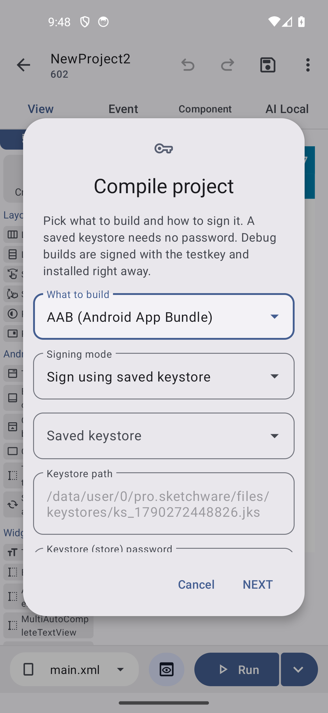
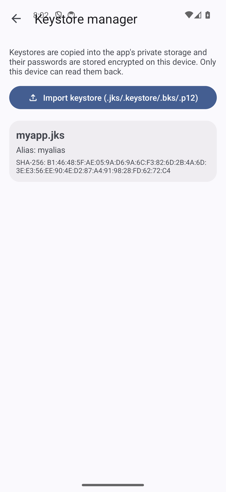
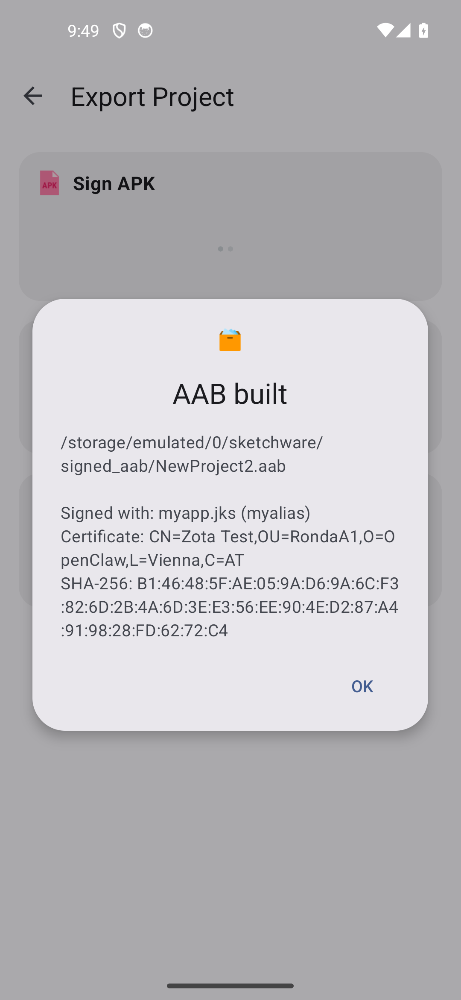
Honest: the AAB has not been checked against bundletool or
Play (there is no bundletool on this machine), the keystore file and testkey
modes of the dialog were not executed for release (UI only), and converting Android Studio/GitHub projects is
still pending (next round: viability + MVP). Version v7.0.14.0 (versionCode 176). The round-A
write-up is at the end of docs/preview-fix.md.
The colours you pick are no longer written transparent into the XML highlight fixed
- The colours you pick in the editor came out transparent — in the preview and in the
compiled app. A bug inherited from the original Sketchware Pro, and
deterministic, not a rare case: any background colour chosen from the hexadecimal
palette was written to the XML as
#00RRGGBB— alpha 00, fully transparent — so the view was drawn with no colour at all and the app said nothing ("Preview OK"). Reproduced in the real flow (editor →Ox→ preview), not only by injecting XML: withbutton1=#2196F3andlinear1=#4CAF50the real preview showed 0 blue px and 0 green px, and the same XML injected reproduced it identically; with the alpha corrected it went to 30,524 / 593,519 px. - Root cause, one line.
a/a/a/Ox.javadidint color = backgroundColor & 0xffffffbefore formatting, andformatColorprints 8 digits whenever the alpha is not0xFF— so0xFF2196F3became0x002196F3→"#002196F3". The same mask also hitbackgroundTint,cardBackgroundColorandcontentScrim, and the text paths (textColor,textColorHint). - The fix: stop masking the alpha at those 4 places (
Ox.java:201, 418, 824, 847;formatColoritself was not touched). Measured in the release APK (R8) with the real flow: blue 0 → 30,398 px, green 0 → 333,317 px, red text 0 → 577 px. The XML now carries#2196F3/#4CAF50/#F44336(6 digits), and the translucent#802196F3keeps its alpha (8 digits,0x80intact, which the old mask would have zeroed). The layout the IDE compiles (mysc/601/…/res/layout/main.xml) carries the right colours too. Regression exact: r8caseA/caseCand r11caseEpixel-identical (356,400 px, same bounding box). Honest: the IDE's ownaapt2link step still fails later on for a preexisting AppCompat resource problem of that project, unrelated to these 4 lines.
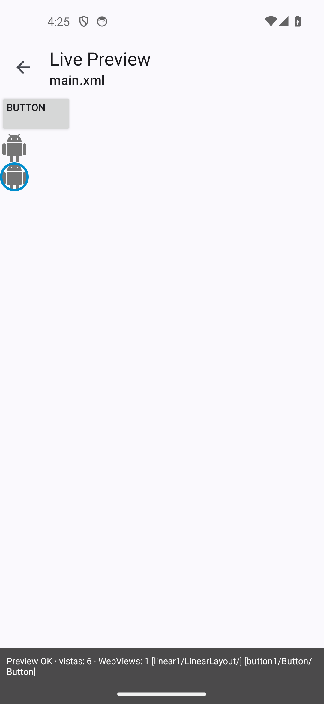
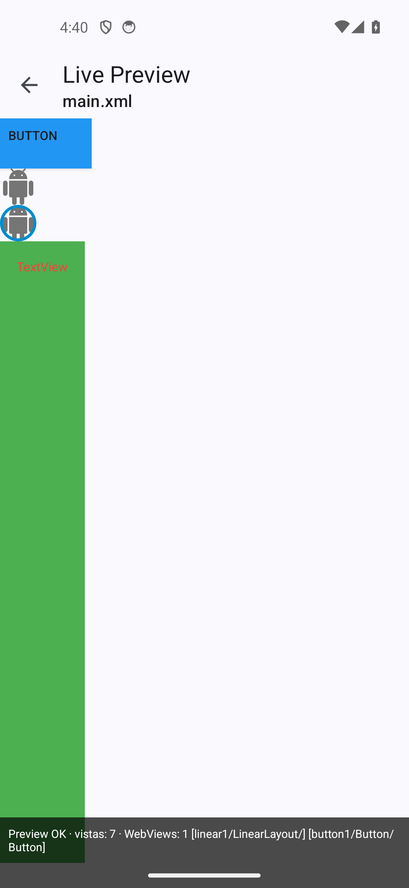
Version v7.0.13.0 (versionCode 175). The round-12 write-up is at the end of docs/preview-fix.md.
Copy the whole notice, the storage permission and the project colours the generated res defines highlight fixed
- The warnings dialog now has a neutral "Copiar" button — in the partial bar and
in the
OKdialog — with the toast "Aviso copiado". What it copies is the complete report, without truncating: the dialog cuts each group at 12 lines (…y N mas), the copy does not — 1,119 characters with 2 missing resources, 1,869 with 20 broken colours, 572 in the styles/icons case. The text is self-sufficient: the state line, every group with its count, every item with its reason and itsbuscado en:, and the closing signature. Verified end to end by pasting it for real into a text field. - Cause one, confirmed with proof: the storage permission. With
MANAGE_EXTERNAL_STORAGEdenied the app cannot read the project files and everything falls back to the defaults silently: the project's blue goes from 373,070 px to absent, logcat showsEACCES (Permission denied)and the icon disappears too. Fixed in three pieces: an explicit amber line in the dialog (0xFFB26A00), a "Storage permission" dialog that opens All files access when it is missing, and a re-read of the project on return (verified in the log). With the permission granted the regression is exact: 373,070 px, same bounding box. - Cause two, the one that was most likely yours:
colors.xmlwas read only fromvalues/. Colours defined in theresthe build generates (@color/colorPrimary,colorAccent, …) came out as not found, so the band stayed white and the bar went red. It now reads both locations, exactly asstyles.xmlalready did: 359,604 white px → 356,400 px with their own colour, zero red. - Checked again in the release APK (R8). The four points behave just like
debug: Copiar (toast + 1,627 characters + a real paste), permission (amber
0xFFB26A0015,488 px, 0 red; with it, teal 356,400 px andPreview OK),@color/colorPrimaryat 356,400 px with the exact bounding box, and the r8/r5 regression with pixel-identical counts and boxes (purple 18,933, green 11,764, blue 90,564, cyan 21,428, magenta 18,896). Honest: recreating the fixtures changed the text of the report (1,627 vs 1,869 characters), and the clipboard can only be verified with a real paste (API 34 does not expose it from the shell).
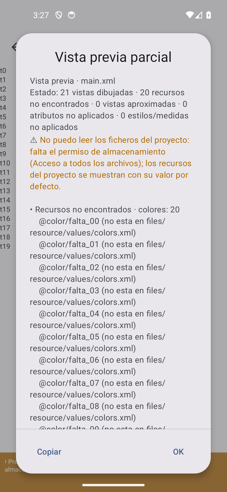
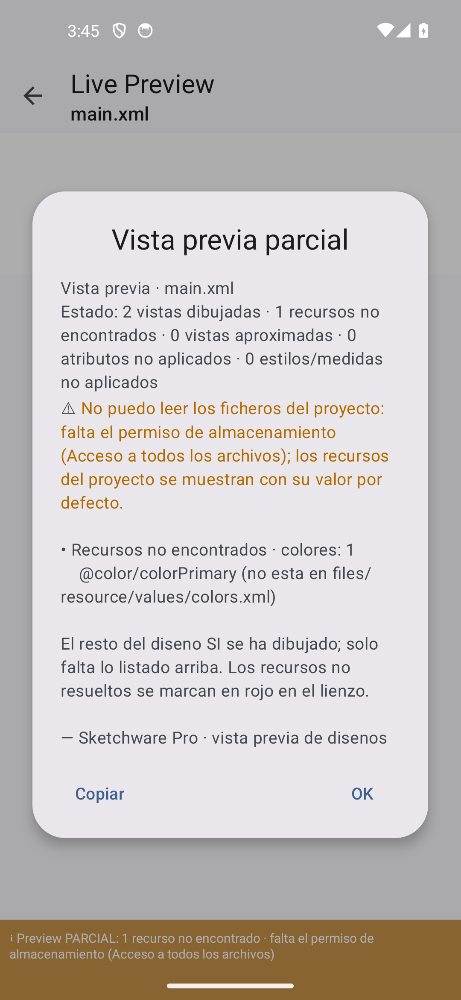
Version v7.0.12.0 (versionCode 174). The round-11 write-up is at the end of docs/preview-fix.md.
The icons the IDE ships, your project's styles.xml, and the constructors R8 was deleting highlight fixed
- The icons were inside the APK all along. The IDE's Material set lives in
assets/icons/icon_pack.zip(5,335,950 B: 2,191 names × 5 styles = 10,955 SVGs,svg/<name>/<style>.svg), and the icon you pick is converted to a vector XML written to the project's image store.sketchware/resources/images/<sc_id>/— not tofiles/resource/drawable. The preview looked at neither, so the icons came out red (2 recursos no encontrados). It now resolves from both and from the build's generatedres. Measured: a red bar with 2 missing resources and 33,087 red px becomes both icons drawn, red=0, with an amber note naming the origin (icon_miscellaneous_services_round -> svg/miscellaneous_services/round.svg). - Your project's
styles.xmlis read in full now. The reader did not understand self-closing<style ... />— exactly how the IDE generatesAppTheme.AppBarOverlay/PopupOverlay— so it lost that style and swallowed the next one: 3 of 5 styles were read. It now reads 5 of 5, also looks invalue/,values-v21,values-nightand the build's generatedres, and a self-closing style with no items wraps the context in the framework base of its parent chain. Result: zero style warnings and the project's theme really applies. - The release was losing view constructors. With R8, 62 classes lose
<init>(Context)and several library views (Google'sSignInButton,FlexboxLayout,LottieAnimationView,SVGImageView) lose all three, so they were drawn as an approximate container. Fixed with 5 narrow-keepclassmembersrules plus replacing reflection with an explicit mapping; anything unmapped goes to the amber notice. Delta: +9,892 B. Verified in release: the real Google button is drawn and 7/7 cases in light and 7/7 in dark keep their colours (case A#123456162,773 px,#EE2222111,016 px). - Honest correction. The initial suspicion — "reflection does not work in release" — was false: the reflection applier never fired (0 hits in the logs), and the round-8 colours did work in release. What failed was the construction of the library views. The explicit mapping removes that fragile path anyway, but not because reflection was broken.
- Flutter toolchain for x86_64.
jniLibs/x86_64/now shipslibdartaotruntime.so(5,873,176 B, the real ELF from the Termux x86_64.deb, which lives inlib/dart-sdk/bin/) andlibfluttergensnapshot.so(5,123,768 B, compiled) with--arch x64c --mode product --os android(Android x64 requires compressed pointers); the ABI block becomesabiHasAotBackend(arm64-v8a|x86_64) whilearmeabi-v7a/x86still warn. Cost: +4.34 MB in x86_64 only (release 112,136,131 → 116,476,809); arm64 unchanged. Honest: actually running it on x86_64 is not verified (no x86_64 image available; not viable on Apple Silicon).
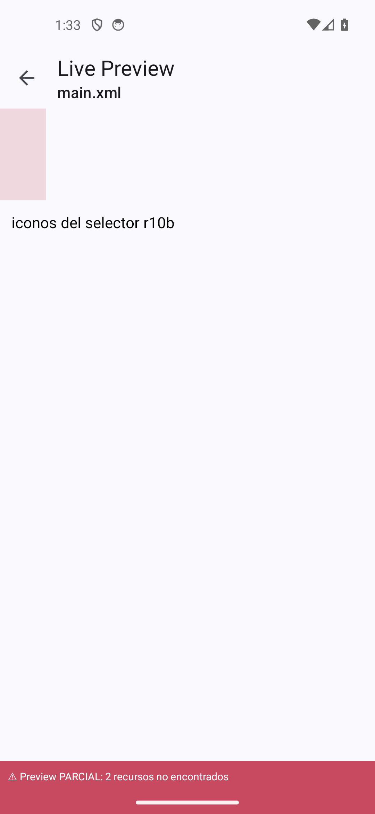
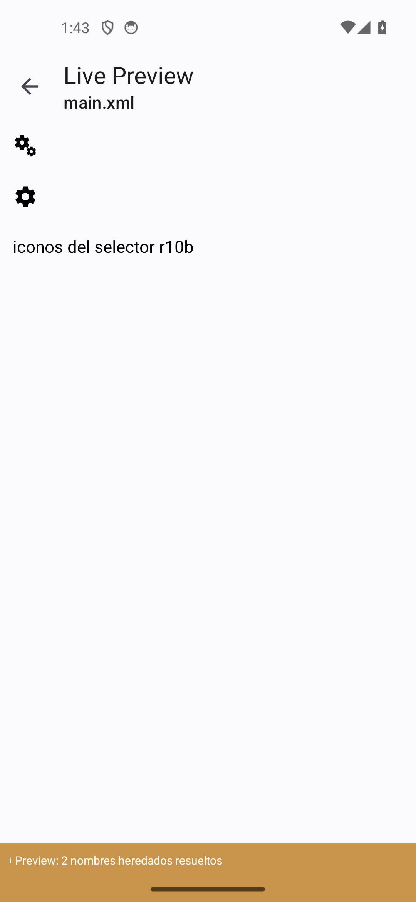
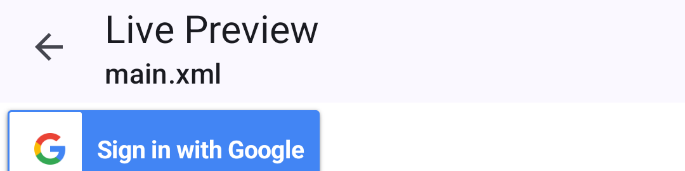
Version v7.0.11.0 (versionCode 173). The round-10 write-up is at the end of docs/preview-fix.md (and the x86_64 toolchain note in docs/flutter-consent.md).
Red now means "it cannot be drawn": unresolvable @style/theme references are amber with a reason, and your project's theme paints for real highlight fixed
- The red marker was lying. References that do not stop the drawing were painted
red. A
@style/...reachingresolveDimenanswered "referencia de medida no resoluble", and a missing@dimen/@android:dimen, a theme?attrthat cannot be resolved or a@styleused asandroid:backgroundshowed up in red even though the view is drawn fine with its default value. Now red is reserved for what really stops the drawing (a missing image, a class with no fallback): every style/measure/theme reference that cannot be applied moves to the amber group "No aplicado / ajustado · estilos y medidas (no impide dibujar)", always with its reason; the phrase "referencia de medida" no longer exists (0 occurrences) and the bar only turns red when there are missing resources. - Your project's
@style/...resolve now, too. They are read fromfiles/resource/values/styles.xml(explicitparent+ implicit inheritance by dots + chaining up to 6 levels; newresolveStyle()/isStyleReference(), with a fallback to the editor/app/material/appcompat/android styles), so@style/AppTheme.AppBarOverlayand@style/AppTheme.PopupOverlayare no longer "unresolved" and a style that does not exist is amber, never red. - The theme is applied, not just resolved.
android:themenow builds the view inside it (ContextThemeWrapperincreateRealView(bean, contextoDelPadre), the children inheriting the parent's context): a style with a resId becomes a real theme, a project-only style (no resId, it is not compiled into the editor's APK) uses a framework base plus its items mapped onto the view — and the false amber "un tema no se aplica" is gone.app:tabTextAppearanceis applied to the tabTextViews (the three sample tabs included):textSize,textColor(colour andColorStateList),textStyle,textAllCaps,fontFamily, the framework style read from the theme with a type guard. - Measured. Before, the bar read red
Preview PARCIAL: 1 recurso no encontrado · 2 atributos no aplicados; after, not one red block and an amber bar. AnAppBarLayoutwiththeme="@style/AppTheme.AppBarOverlay"went from no background to taking the theme colour#FF112233; tabs with a projecttabTextAppearancerender in magenta 24sp bold (9 applied settings);@android:style/TextAppearance.Widget.TabWidgetresolves by resId 16973901 (3 settings) — red=0 amber=0 in the six screenshots. - Regression and honesty. Rounds 1-7 (15 XML) keep the 11
Preview OKandcaseR4_mixeddrops from 4 to 3 red resources (one becomes amber); rounds 5-8 (23 XML) lose noPreview OK. Honest: the project styles have no resId (not compiled into the editor's APK), so their theme is emulated (framework base + mapped items); the framework's?attr/references insidetabTextAppearanceare left to the theme;popupThemeandactionBarThemeare still not applied.
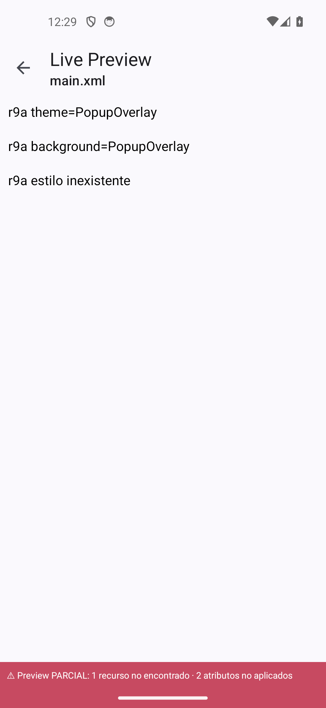
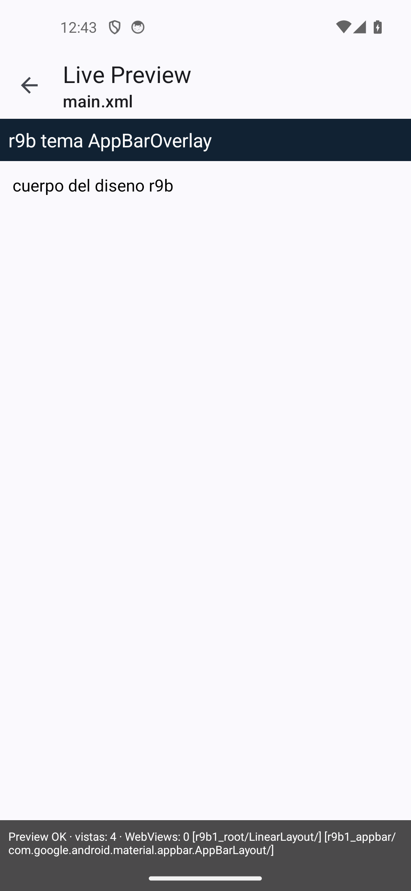
Version v7.0.10.5 (versionCode 172). The round-9 write-up is at the end of docs/preview-fix.md.
The colours that "showed up in none of them": a whitelist of 19 attribute names was throwing them away highlight fixed
- The complaint: "the colours don't show up in any of them". The preview applied
the
app:*/android:*attributes through a fixedswitchof 19 names and discarded everything else in silence — no warning, no log — while the design editor (ViewPane) did apply them with its own handlers. The good engine was the editor's, and the preview was almost always using the other path (tryInflateRealLayout), so no colour configured on a widget ever showed up. - Shared appliers plus a generic applier plus reflection. The appliers of
TabLayout,CircleImageView,MaterialButtonandCardVieware extracted from the design editor into a single shared helper (pro.sketchware.utility.WidgetInjectApplier) so both engines apply the same thing, and the rest goes through a generic applier per view type (TextView, ImageView, Progress/Seek/Rating, CompoundButton, List/Grid/Spinner, BottomNavigationView, TextInputLayout, Calendar/Date/TimePicker, SearchView, LinearLayout…) with a last-resort reflection pass (app:loQueSea→setLoQueSea). Whatever cannot be applied now ends up in the amber bar with its reason — never in silence again. - Found on the way.
@dimensupport (newresolveDimen),@drawable/@colorin those attributes, a shape<size>with height only (the invisible divider),textColor/textSizeofAnalogClock/DigitalClock(the parser was throwing them away), aTabLayoutwith no tabs (three sample tabs are added, exactly as the editor does) and a horizontalProgressBarwhen the XML asks for it. - Measured (PIL/numpy, 7 cases, one per family, light and dark), before → after: card
stroke 0 → 19,988 px; tab indicator 0 → 1,496; selected tab text
0 → 689; circle border 0 → 11,924; circle background
0 → 90,660;
progressTint0 → 18,907; adividerset to a project@drawable0 → 11,880;DigitalClock#CC00000 → 3,060 — 7/7 cases in light and 7/7 in dark. The amber bar readsPreview OKwith no pending attribute in cases A/B/C/D/G, in E it lists only the five library attributes an absent class cannot receive (with the reason) and in F no attribute is left pending. - Regression and honesty. Rounds 1-7 come out 17/17 identical to the
baseline summary (the round-7
CircleImageViewand the round-6 ten views included), and a falsefontFamilywarning that was throwing two cases off is fixed on the way; the design editor is untouched (ViewPane.javanot modified,DesignActivityopens without a crash). Honest pending: not tested with your project or APK; "before" is the previous release and "after" the debug build of this round; widgets whose class is not in the editor (Library/Google/ads/map/lottie) keep their background and size but not their own attributes (they are listed); and no stroke width or radius was measured by pixels, only colours.
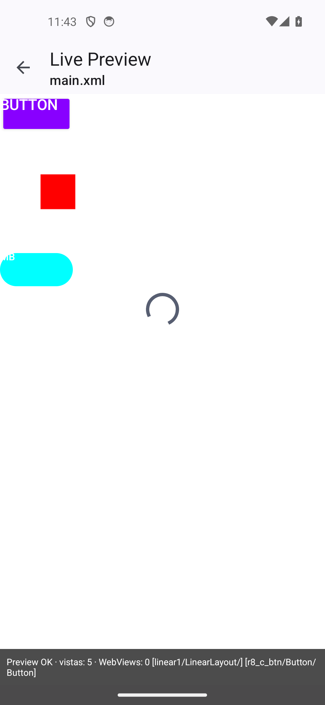
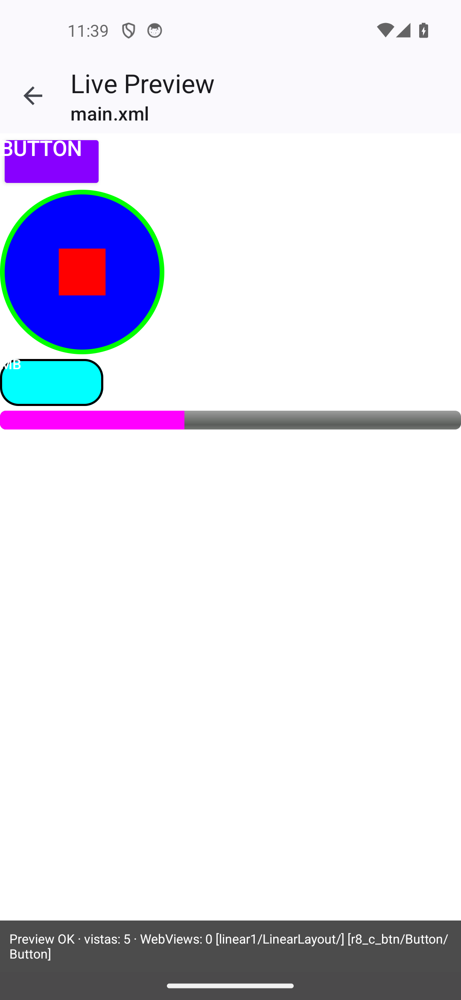
Version v7.0.10.4 (versionCode 171). The round-8 write-up is at the end of docs/preview-fix.md.
The CircleImageView that killed the preview can no longer kill the app you compile highlight fixed
- The warning.
CircleImageView: scaleType CENTER no admitido, withjava.lang.IllegalArgumentException: ScaleType FIT_CENTER not supportedand the bar sayingPreview PARCIAL: 1 atributo no aplicado. Round 6 caught it so it would not abort the whole preview; round 7 fixes it at the root — in the generator and in existing projects, not just in the preview. - Three causes at once. (1) Case: the bean stores
scaleType="CENTER"— the enum name, in capitals — while the XML usescenter/centerCrop, and the preview's translator was case-sensitive:"CENTER"matched no case and fell back toFIT_CENTER, which is why the exception namesFIT_CENTERand notCENTER. (2) The generator: for aCircleImageViewthe XML carried noandroid:scaleType(theOxfilter drops the attribute on any widget whose class name contains a dot), but an old or imported bean with the short class name does pass that filter andOxwroteandroid:scaleType="center"— the very value that makes the compiled app fail, not only the preview. (3) The library is stricter than expected:de.hdodenhof:circleimageview:3.1.0accepts onlyCENTER_CROP— checked withdexdumpon the release APK, the method compares against a single static field andCENTER_INSIDEthrows too — so the fix does not keepCENTER_INSIDE. - Five changes. (1) The generator always writes
centerCropfor aCircleImageViewand sanitises ascaleTypewritten by hand ininject, leaving every other image widget as it was. (2) A new pure classScaleTypeCompatholds the logic (XML ↔ enum, supported value, adjustment, sanitiser) and is tested on the JVM: 60 checks, 0 failures, idempotent. (3) Existing projects are normalised in four places — compile/generate, read the XML, open the design editor and preview — so an oldCENTER/FIT_CENTER/CENTER_INSIDEends up corrected without touching any other widget. (4) The preview applies the supported fallback and the amber notice now names the value:scaleType MATRIX -> ajustado a CENTER_CROP (el widget solo admite CENTER_CROP). (5) The property selector offers aCircleImageViewonlyCENTER_CROP(it used to offer all seven values). - Verified. The XML generated from the real project carries
android:scaleType="centerCrop"and the same layout closes withPreview OK · vistas: 5and no warning, while a plainImageViewkeepscenter; in the RV_API34 emulator with the R8 release the circle is drawn with an area fraction of 0.768 (≈ π/4, a square would be 1.000) and the parent's colour in the four corners; rounds 1-6 come out identical (9 cases plus the fourcaseR6_*). - An intentional difference: a plain
ImageViewwithCENTERis no longer stretched in the preview (it used to fall back toFIT_CENTER) — it now draws what the app will draw. Honest pending: the app you compile was not tested, nor was a full on-device build; the property dialog was not walked through by hand for aCircleImageView; and the evidence comes from test project 601.
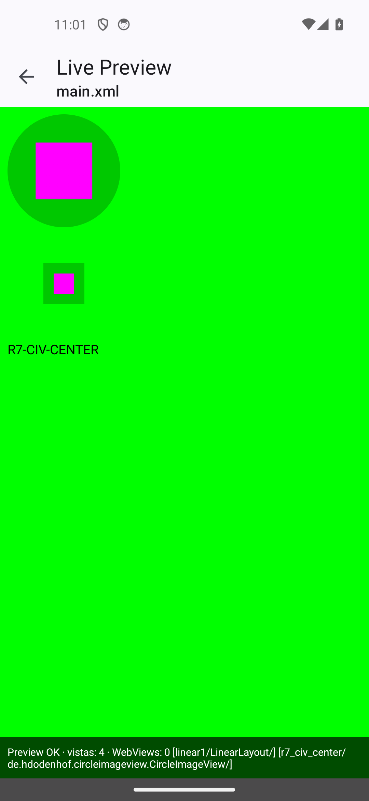
Version v7.0.10.3 (versionCode 170). The round-7 write-up is at the end of docs/preview-fix.md.
The ten views the editor could not instantiate work again, and a view it still cannot build is no longer a mute red hole highlight fixed
- The bar said
Preview PARCIAL: 10 vistas no instanciables.CoordinatorLayout,AppBarLayout,CollapsingToolbarLayout,MaterialToolbar,MaterialButton,CircleImageView,SwipeRefreshLayout,TabLayout,BottomNavigationViewandCardViewwere painted as ten identical red boxes (“no disponible en el editor”, 58,716 px of red) and the status bar itself was red. - The classes were there; the constructor was not. All ten are in the release
dex with their name intact (
mapping.txtmaps each one to itself), and R8 had dropped the constructor the preview asks for through reflection:<init>(Context)was gone in 9 of the 10 — only the inflation<init>(Context, AttributeSet)survived, because the libraries themselves ask for it — and logcat is explicit:java.lang.NoSuchMethodException: androidx.coordinatorlayout.widget.CoordinatorLayout.<init> [class android.content.Context](×9). In the tenth,CircleImageView, hierarchy optimisation made the one-argument constructor throwClassCastException: CircleImageView cannot be cast to …ItemCircleImageView. Debug builds never showed it: without R8 all ten keep their three constructors, which is why the failure only appears in releases. - Fix 1 — the preview stops depending on one constructor.
InvokeUtiltries(Context)→(Context, AttributeSet)→(Context, AttributeSet, int)and returns the exact reason instead of a mutenull(and logs when it falls back to the inflation constructor), and three narrow-keepclassmembersrules inapp/proguard-rules.pro—androidx.**,com.google.android.material.**andde.hdodenhof.**, alwaysextends android.view.View— give the one-argument constructor back. Measured in release: 10/10 instantiable (it was 0/10) for +49.7 KB, +0.04 % of APK, and debug and release behave the same now. - Fix 2 — useful degradation. When a class really is not in the editor's APK there is no
mute red gap any more: a generic
FrameLayoutkeeps the declared background, padding and size and draws the children (before, being noViewGroup, they were lost) — measured: children 0 px → 1,418 + 1,915 px — with a thin amber border and an≈ Classpill instead of alarming red and the reason in the detail dialog. Also fixed: a single unsupported attribute used to abort the whole native preview, and is now caught and noted in amber (“la vista SI se ha dibujado”). - Regression rounds 1-5 fine, in release: HTML/WebView identical, text colours
4,665/6,025 px, project/theme backgrounds 356,400 px, images 10/10,
MaterialButton+WebView 698,570 px, and the live cases that used to say “no instanciable” now say “aproximada” with the same counts. - Honest pending: the layout generator writes
android:scaleType="center"for every image by default andCircleImageViewonly acceptsCENTER_CROP/CENTER_INSIDE, so that layout may still fail inside the app you compile — it is a generator matter, not the preview, and it is not fixed here.
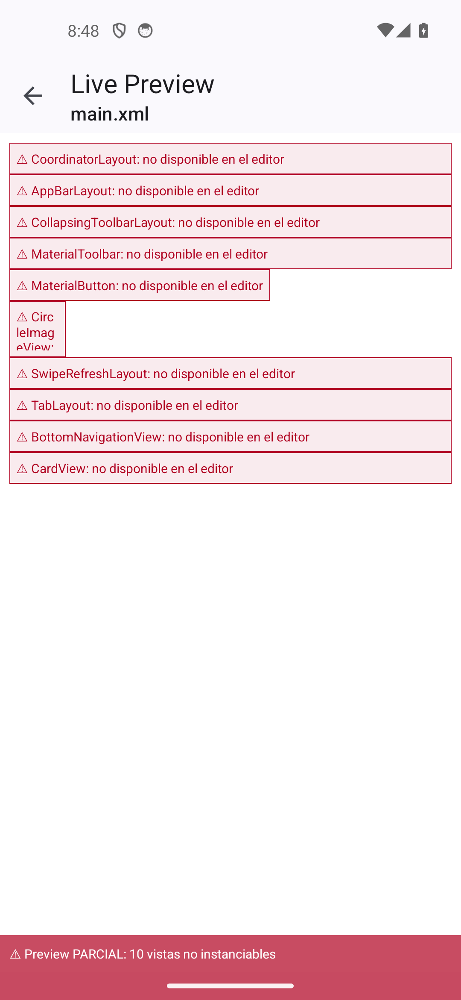
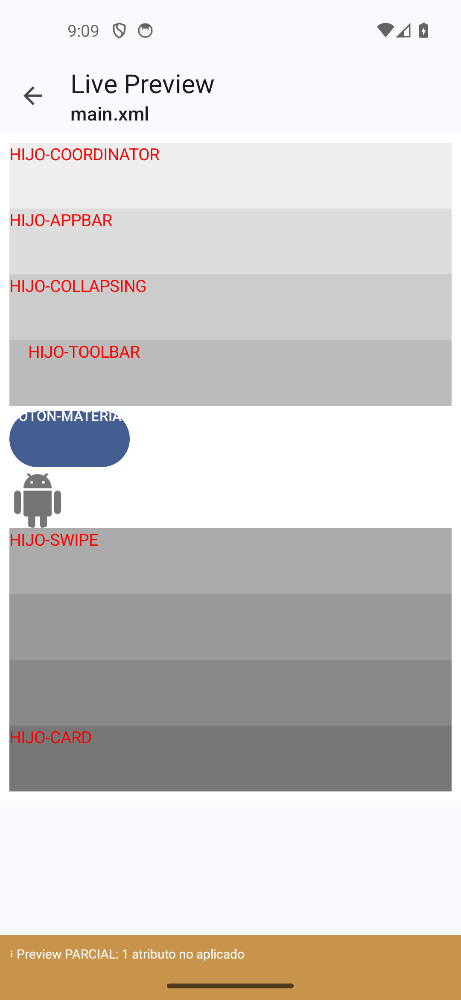
Version v7.0.10.2 (versionCode 169). The round-6 write-up is at the end of docs/preview-fix.md.
The toolchain no longer says "not installed", and the inherited icon names highlight fixed
- The "not installed" was our check, not your install. The installer verified the Dart SDK by
running
<filesDir>/flutter-toolchain/dart/bin/dart --version, and SELinux forbids executing an ELF that lives in the app's data directory (execute_no_trans,error=13,untrusted_app). The probe returnednull, the install aborted before downloading the engine artifacts and the UI ended atToolchain de Flutter no instaladoafter 91 MB — a bug in our check, with the SDK data already on disk. - "Installed" is now a data criterion. The marker
installed.properties, the AOT snapshotsgen_kernel_aot.dart.snapshotanddartdev_aot.dart.snapshotandlib/_internal/vm_platform.dilldecide it; abin/dartthat will not start can no longer turn a correct extraction into "not installed". "Can compile" adds a real execution probe launched from the native libraries directory (nativeLibraryDir/libdartaotruntime.so), sobin/dartis never executed again and every message names the piece, the path and the cause, plus an honest intermediate state (SDK Dart … extraido … pero NO listo para compilar) instead of blaming W^X. - A second, pre-existing bug fixed. The pub dependencies were extracted with a
<package>-<version>/prefix that pub.dev tarballs do not carry, so 0 files were written and the install died with El paquete characters 1.4.1 no se extrajo bien; it now retries without the prefix. The consent dialog also warns about the real disk space: the download is ~307 MB, but extracted the toolchain takes ~800 MB. - Verified on an arm64 API 34 emulator: the full install ends at
Toolchain Flutter: instalado (Dart 3.13.4) · 813.7 MBand the installer log shows the app runningnativeLibraryDir/lib/arm64/libdartaotruntime.soinside its own process. Honest: the full compile (pub get + build) inside the app could not be automated on the emulator and is not claimed; what is proven is that the packaged binary does run in the app's process. - Inherited icon names.
ic_tune_whiteexists in no source of this IDE — 2,382 drawables were dumped and the current equivalent isic_tune_24/ic_mtrl_tune— so the preview now resolves those old names as a last resort, only after project, assets, libraries and the IDE, normalising prefixes (ic_,img_,icon_) and colour/size suffixes; a single match is used, several are called ambiguous and stay red. And nothing happens silently: its own group in the detail dialog (Nombre heredado resuelto -> @drawable/ic_tune_white -> @drawable/ic_tune_24), an amber info bar when there is no real failure, and the log. - Measured: the real case goes from 2 red blocks (2,080 px) to 1 (1,040 px)
and the bar reads
1 recurso no encontrado · 1 nombre heredado resuelto; the round-4 grouped detail and every earlier preview case keep working. Honest pending: it covers the names whose concept still exists (~19/44 of the families tested); typos, mipmaps and concepts with no current icon stay red.
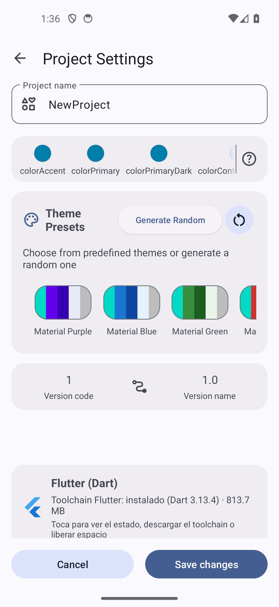
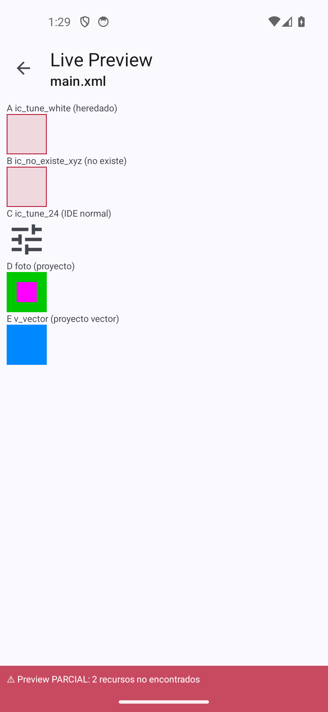
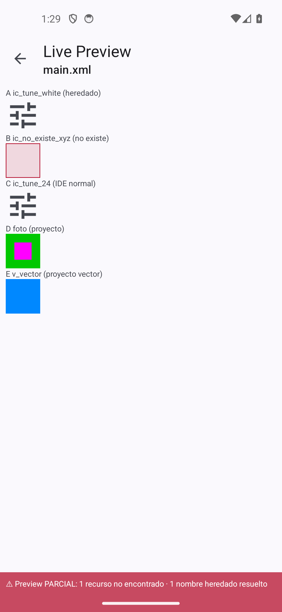
Version v7.0.10.1 (versionCode 168). The round-5 write-up is at the end of docs/preview-fix.md; the toolchain state/install fix is in docs/flutter-consent.md.
The Dart download you could not find, and preview round 4 highlight fixed
- The toolchain is no longer hidden.
FLUTTER_EXPERIMENTAL_ENABLEis now on by default (whoever already changed it keeps their value), a "Flutter (Dart)" card in the project settings shows the real state (Toolchain Flutter: no instalado (~307.2 MB)orinstalado (Dart <v>) · <N MB>) and opens the status/download/delete dialog, and the design screen drawer has a new item (Flutter: estado del toolchain) that opens the same dialog. With the flag off, both entries stay visible and explain how to turn it on, with a button that opens Feature flags — nothing disappears silently. - The "32" were drawn views, not broken ones. The old
Preview PARCIAL · vistas: 32 · no disponibles: @drawable/ic_tune_whitewas read as "32 broken views" while the 32 were the views that did paint; the notice is now a short grouped summary (Preview PARCIAL: N recursos no encontrados · M vistas no instanciables) with a detail dialog when you tap the bar — groups by cause, count, reason and where it was searched for, 12 per group — and the full detail in logcat. - The real bug: project libraries were not searched at all. The preview ignored the local
AARs unpacked by
DependencyResolver/ManageLocalLibraryand the extracted built-in libraries, which the compiler does link withaapt2. Now it indexes them: measured with a local library fixture,@drawable/ic_tune_whitegoes from a red marker (2,076 px) to a drawn icon (6,174 px) and the case turns from PARCIAL intoPreview OK · vistas: 32. Broken fonts no longer count as views and the notice bar is no longer covered by the navigation bar. - Honest clarification:
ic_tune_whiteexists in no source of this IDE — the APK shipsic_tune_24/ic_mtrl_tuneand it was an inherited Sketchware name — so that exact name cannot be drawn, and now it says so clearly instead of flagging the whole view. Regression fine:colorPrimary, backgrounds, styles, images/vectors/gif,MaterialButton+WebView and a real layout. - Honest pending: verified on an arm64 API 34 emulator with
uiautomatorand screenshots and without downloading anything; the installed line was never rendered (there was no toolchain and the 307 MB were not downloaded).
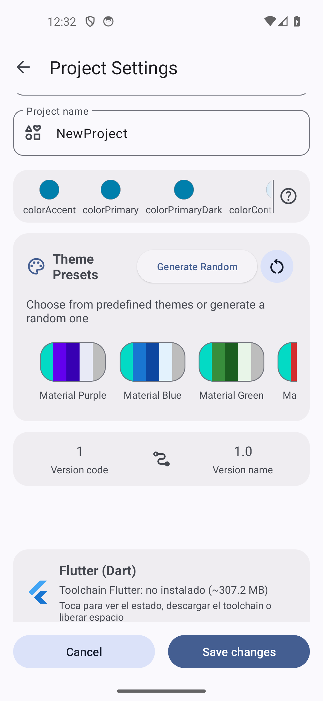
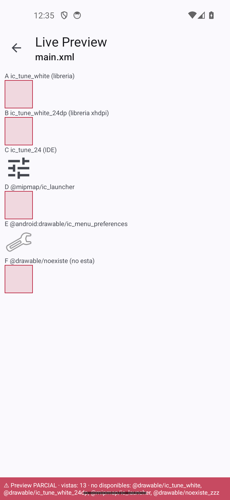
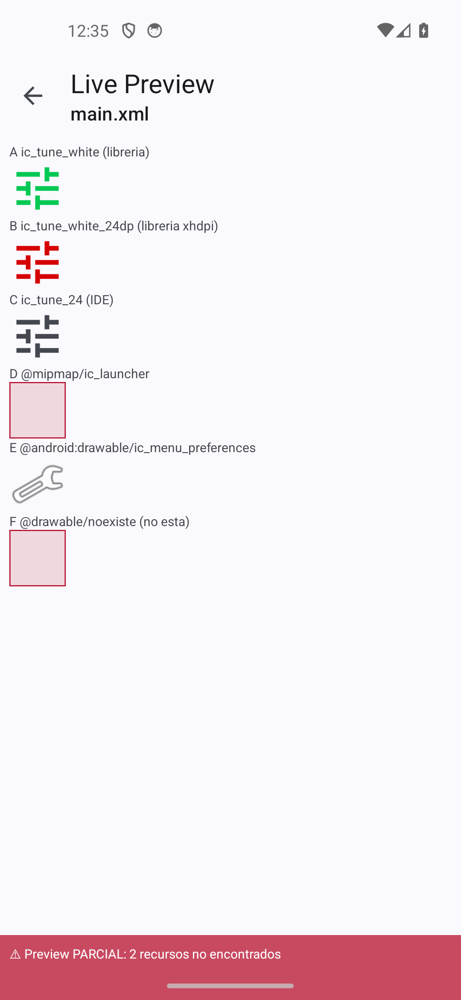
Version v7.0.10.0 (versionCode 167). The round-4 write-up is at the end of docs/preview-fix.md; where to find the Dart toolchain is in docs/flutter-consent.md.
Preview round 3: text colours, styles, linear layouts and images highlight fixed
- Text colour from the Material palette. The editor's picker stores
"?" + attr(e.g.?colorPrimary) and the preview only understood?attr/..., so the text fell back to the default theme colour. Any expression starting with?resolves now — measured(68,71,79)→(68,94,145). - Linear layouts were painted white. The same resolution failure, but the fallback was the
IDE's opaque white
0xFFFFFFFF"pending" marker, so a?colorPrimarybackground came out white —(255,255,255)→(68,94,145). The preview no longer falls back to that literal colour when the resource could not be resolved. - Text styles. Only bold was applied; now italic, bold+italic, monospace and the project's
@font/...TTFs work, and a font that does not exist gets a notice instead of silence. - Images. Only
drawable/<name>.{xml,png,jpg}was searched and a miss was a silent gap; now webp/jpeg/gif/bmp, density folders and subfolders,files/assets,app:srcCompat, vectors (drawn with the preview's ownPathParser) and the IDE's default image resolve too, and anything unresolvable shows a red marker plus the reason in the status bar. - Found on the way. Injected attributes were compared with the
android:prefix against local names, so they never matched:fontFamily,srcCompat,alpha,gravity, paddings… now work. Regression checked: a real project in light and dark, HTML/WebView, project@color/andMaterialButtonare all fine. - Honest pending: selectors/ripples/layer-lists are approximated by their last shape,
vectors with group transforms are not supported,
.9.pnglose their patches,?attributesresolve with the IDE theme (not the project's) and nothing was tested on a physical phone.
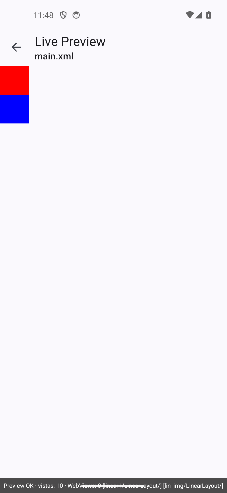
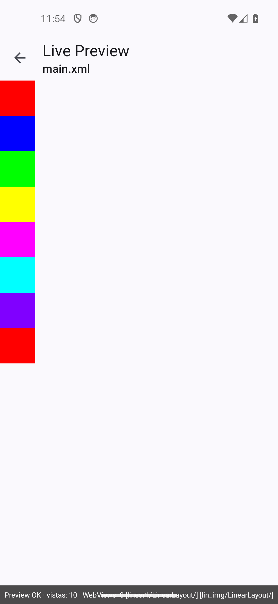
Version v7.0.9.0 (versionCode 166). The round-3 write-up is at the end of docs/preview-fix.md.
Dart toolchain: visible download, decided by you highlight fixed
- No more silent downloads.
ensureInstalled— the path every build uses — no longer touches the network: it only leaves the message to install the toolchain from the menu. Only the newallowDownload = truevariant, after consent, downloads. - The dialog (menu → Flutter: toolchain status) shows the state, the missing components
with their size,
Descarga necesaria: ~307.2 MB, a Wi-Fi warning, where it is saved (/data/user/0/pro.sketchware/files/flutter-toolchain) and that it works offline afterwards, with Download now / Delete toolchain (free X MB, with confirmation) / Cancel. - Compile and run asks for the same consent and, when cancelled, aborts with a clear message and writes nothing to disk. Project info shows whether the toolchain is installed, what is missing and the space used.
- Honest: the real 307 MB download was not run in the test (it was
optional); the dialog, the build abort and the delete path (with a simulated 5 MB) were verified on an
emulator with
uiautomatorplus screenshots.
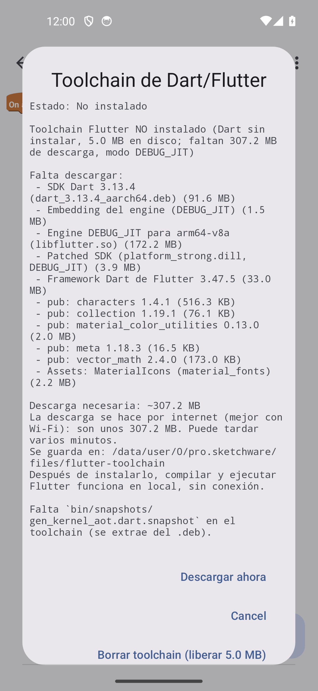
Version v7.0.9.0 (versionCode 166). Full write-up: docs/flutter-consent.md.
Preview: project colours, cold start and the xml extra highlight fixed
- Project colour resources resolve now. A background written as
@color/...was kept as the parser's0xFFFFFFFF"pending" marker and the preview painted it white; the project's@color/...and?attr/...are now resolved — verified with pure blue,(0,0,255). - Cold start no longer crashes. Opening the preview without passing through the design
editor died with a
NullPointerException—ColorsEditorManagerreads the globalDesignActivity.sc_id, which isnullin a fresh process — leaving a dead screen with no message. The project is now set beforehand and atry/catchshows the error on screen. - The
xmlextra is honoured. Opening the preview from the view XML editor now shows exactly what you are editing, without saving. - Verified by pixel on an arm64 API 34 emulator: magenta root
(255,0,255), project colour blue(0,0,255), aMaterialButtonvisible, HTML/WebView intact and defaultTextView/Buttontext legible in both themes —(68,71,79)on(250,249,253)light,(196,198,208)on(18,19,22)dark. - Honest pending: Material beyond
MaterialButton, Material3 projects, custom project themes, a physical phone and a formal regression of the design editor.
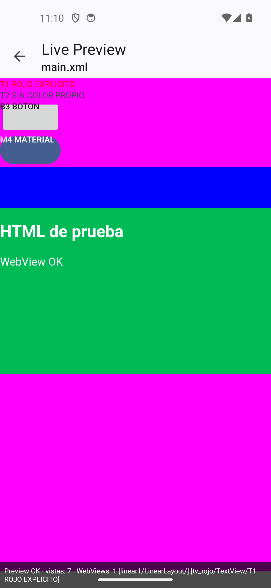
Version v7.0.8.3 (versionCode 165). The round-2 write-up is at the end of docs/preview-fix.md.
Design preview paints again highlight fixed
- The symptom. The preview of View-based designs (the HTML/WebView preview always worked) showed the design area empty — white or black depending on the theme — with only the widgets that paint themselves (SeekBar, Switch, icons) and the WebView HTML visible.
- The cause was a sentinel. The IDE's own data model stores
0xfffffffor "no colour chosen" (TextBean.textColor/hintColor,LayoutBean.backgroundColor), andLayoutPreviewActivityapplied it as a real colour: as anint,0xffffffis0x00FFFFFF— alpha 0 — so the text became fully transparent and the background the widget's own theme would have painted was wiped instead.ViewPanemade it worse by forcing a white canvas in preview mode while the views were inflated with the IDE theme, which is why the contrast flipped with the theme. - The fix.
0xffffff(and any zero-alpha colour) now means "not set" and the theme decides; the preview canvas uses thecolorSurfaceof the same theme that inflates the views; the inflated root keeps the dimensions declared in the XML; and a view the IDE cannot instantiate shows a red marker plus a "partial preview" notice instead of a silent gap. - Verified on an arm64 API 34 emulator: the same layout, light and dark, now paints the
button — its area measured 255,255,255 with zero glyphs before — and HTML/WebView previews keep working
(
Preview OK · vistas: 3 · WebViews: 1). - Honest pending: Material components (MaterialButton, CardView), Material3 projects and custom project themes are not verified on screen, and nothing has been tested on a physical phone.
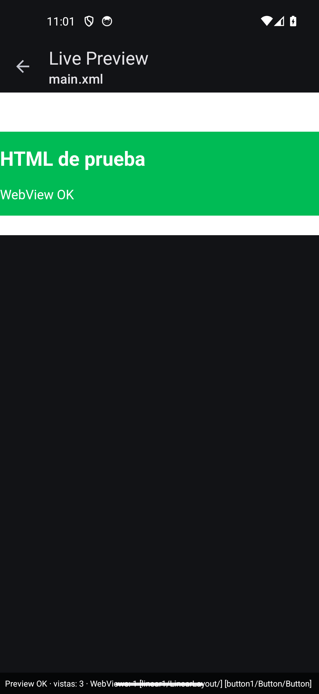
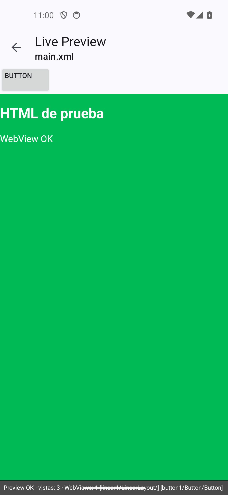
Version v7.0.8.2 (versionCode 164). The root cause, the file-by-file fix and the measured evidence are documented in docs/preview-fix.md.
Release/AOT on the device, complete assets and real pub highlight experimental
- Release/AOT is unlocked on the device. The Dart SDK for Android was built for this fork
with compressed pointers — the flag comes from the architecture name (
arm64c), not from a command-line option — and as a product build, because the first token of the snapshot's feature string is decided at compile time (product, notrelease). Itsgen_snapshot(4,991,592 B, sha2569921983f…) ships inside the APK and with it the phone itself produces alibapp.sothe official engine accepts. Tested: a release APK boots in an arm64 Android 14 emulator, the counter goes 0 → 3 on real taps and there is no DEBUG banner. Control A/B: the same APK with the Termux SDK'sgen_snapshotfails with the snapshot requires 'no-compressed-pointers' but the VM has 'compressed-pointers' — only compressed pointers were missing. - The app can run its own tools. With
targetSdk 34, SELinux deniesexecute_no_transfor binaries infilesDirand in/data/local/tmp, butnativeLibraryDirworks: the runtime andgen_snapshotare packed aslib/arm64-v8a/libdartaotruntime.soandlibfluttergensnapshot.so. The app ran the whole AOT from its own process, as an untrusted app and without root, in 3.9 s and with the same sha256. - The asset bundle is complete. Material Icons (the real pin is
bin/internal/material_fonts.version→fonts.zip, not an engine artifact), theink_sparkle.fragandstretch_effect.fragshaders precompiled on the host and embedded,AssetManifest.bin(StandardMessageCodec),FontManifest.jsonandNOTICES.Z. Verified on the device: the+icon is drawn and the shader error is gone. - Real pub.
dart pub getnow runs on the device (the pub client ships in the Dart SDK itself) and resolves real pub.dev packages, and the kernel is compiled with the resulting authenticpackage_config.json. - Plugins: half-way, stated honestly. The fork has its own Kotlin/Java plugin compiler
(ECJ plus the fork's
K2JVMCompiler) that generates theGeneratedPluginRegistrant, merges manifests and pulls AAR dependencies; no plugin has been compiled or started on a device yet — that is the first pending item. - Cost and limits. The two packed executables add 10.18 MB to the
arm64-v8aAPK; other ABIs have no AOT backend and say so instead of failing silently. The default mode is still debug/JIT, this stays experimental and there is still no hot reload.
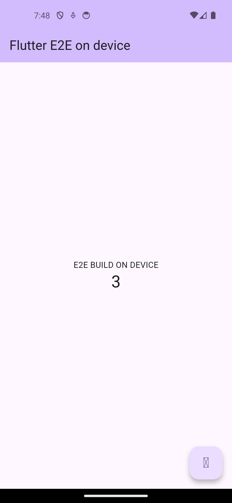
Version v7.0.8.0 (versionCode 162). The commands, the measured numbers and the honest pending work are documented in docs/flutter-fase8.md.
Hotfix v7.0.8.1 (versionCode 163). The minified release broke the compilation of
any project inside the app: R8 renamed the SourceVersion fields and the ECJ
Messages table, and dropped the apksig classes that sign the APK — three chained
failures, all reached through reflection. Fixed with three keep rules in
app/proguard-rules.pro and verified on an arm64 API 34 emulator: a real project compiles and
signs, with ExceptionInInitializerError gone from logcat.
Flutter support: Dart editor and builds on the device highlight experimental
- The editor understands Dart.
.dartfiles get the TextMate Dart grammar (from the Dart-Code project, MIT), its language configuration, bracket matching and Dart completions, plus a Flutter icon in the menus. - A Flutter project type. Behind the
FLUTTER_EXPERIMENTAL_ENABLEflag (off by default, in Settings › Feature flags), saving a project seedsfiles/flutter/withpubspec.yaml, a Material 3lib/main.dartcounter app,assets/andandroid/. The editor then offers a Flutter menu to build and run, check the toolchain status or read the project info. - The toolchain is downloaded to the phone (Dart SDK for Android 3.13.4 and the Flutter 3.47.5 engine artifacts) and everything runs on the device: the only network use is that first download. There is no cloud service and Gradle is not involved.
- Honest limitation: release/AOT on the device is blocked. The Dart SDK's
gen_snapshotis built without compressed pointers while the official engine requires them (Snapshot not compatible: the snapshot requires arm64 android no-compressed-pointers but the VM has compressed-pointers), and a compatiblegen_snapshotis only published for linux-x64/darwin-x64/windows-x64 hosts (404 for arm64/android). Only debug/JIT is usable today, and the UI says so. There is also no hot reload, no real pub resolution and no plugins. - Proven on a real device. In an arm64 Android 14 emulator the phone's own Dart compiled the
kernel and an APK packed by hand with
aapt2+d8+zipalign+apksignerstarted: the Flutter activity came up RESUMED, Material UI rendered and the counter moved on real taps. It has not been tested on a physical phone or on ABIs other thanarm64-v8a.
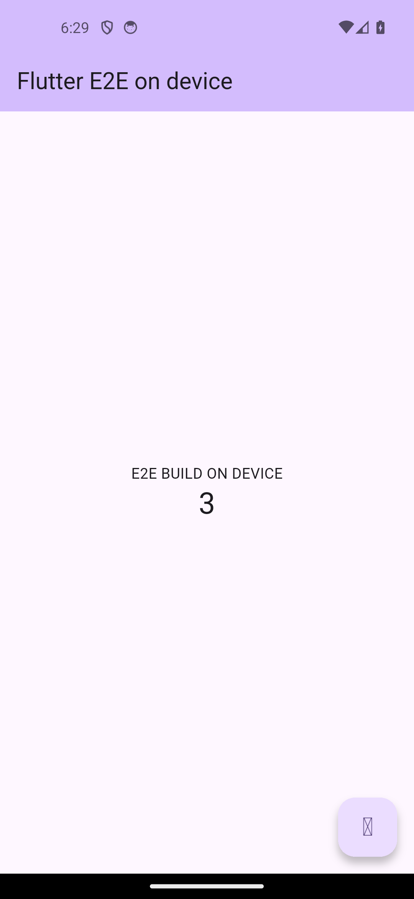
Version v7.0.7.0 (versionCode 161). The measured numbers, the raw commands and the pending work are documented in docs/flutter-fase7.md.
Layout preview no longer blank fixed
Designs built with View elements (AndroidX, widgets) showed a blank preview: they went through the design editor's renderer, which returned an empty root when the layout name was not found in the project data. Now every layout is built with the real-views builder that works from the XML alone, with the native renderer as fallback and a visible message if both fail. Version v7.0.6.0.
Kotlin completions highlight done
.kt files get the same treatment as Java: suggestions from your project's Kotlin symbols
(classes, objects, fun, val/var), Kotlin keywords, and the SDK and
library classes. Highlighting and indenting still delegate to the TextMate Kotlin language. Kotlin
diagnostics need the Kotlin compiler and will come in a later phase. Version v7.0.5.9.
Quick fix: import the missing class done
Diagnostics now fix what they report: when a type cannot be resolved, the diagnostic offers
"Importar android.widget.Button" (or whichever class matches in the SDK and your libraries),
and choosing it inserts the import after the package line. Quick fixes are tied to
the document version, so stale ones are dropped automatically. Version v7.0.5.8.
Go to definition and find usages done
The editor now jumps between files: "Go to definition" and "Find usages" resolve the symbol under the cursor across all the project's sources and open the result, with a chooser when there are several matches. The symbol index records each declaration's file and line, and the navigation runs on the LSP scaffolding that was already in the repo. Version v7.0.5.7.
SDK and library completions done
Suggestions now go beyond your own code: they include the Android SDK classes
(android.jar) and the classes of the libraries your project uses. The simple
name is inserted and the fully qualified name shows as the description. The index is read once, cached
in memory and on disk, and warmed up when a .java file opens. Version
v7.0.5.6.
Live Java diagnostics done
Errors and warnings are now underlined as you type: 1.2 s after you stop, the app compiles just the file
you are editing with the Eclipse compiler it already bundles (project classpath, files/java as
source path) and shows the message when you tap the mark. Runs off the UI thread, discards stale results
and fails silently. Version v7.0.5.5.
Autocompletion with your own symbols done
First slice of the in-app IDE: the Java editor now suggests the classes, methods and fields of your project while you type, plus Java keywords. The index is built by reading the project's source files (no compiler), cached and refreshed only when sources change. Everything else in the editor still delegates to sora-editor's language. Version v7.0.5.4.
The app's GitHub links point here done
The repository, releases and commits links inside the app now open
aurenox-global/Sketchware-Pro instead of upstream, so the update notice checks this fork's
releases. Verified inside the built APK (resources.arsc). Version v7.0.5.3.
One APK per architecture done
ABI splits enabled: assembleRelease produces one APK per architecture instead of a single
universal one, so a device no longer downloads the other three sets of native libraries. Verified: each APK
carries only its own lib/<abi>/, including the bundled aapt2. Published as
v7.0.5.1, signed with the original key.
The original signing key stays done
Release builds keep the project's own testkey.keystore (SHA-256 a40da80a…) on
purpose, so new APKs install over existing installs. Verified with apksigner: all four split
APKs carry that fingerprint. A private 4096-bit keystore is kept aside at
~/.android-keys/sketchware-pro/release.jks for the day a real distribution identity is wanted.
First versioned build done
- Build no longer needs a git repo —
git rev-parseused to run during configuration and corruptedBuildConfig.GIT_HASH. Now it readsGIT_HASH/GIT_SHORT_HASHfrom the environment and only uses git when.gitexists. SKETCHUB_API_KEYdefault — without the env var,BuildConfigused to contain the literal"null". It is now an empty string.- Release signing moved out of the repo — credentials come from
RELEASE_STORE_*/RELEASE_KEY_*(environment or~/.gradle/gradle.properties), with an explicit warning when they are missing. - 64 empty
catchblocks annotated — 44 files were swallowing exceptions silently; they now log throughLog.d("SketchwarePro", …). - Faster builds —
org.gradle.parallelandorg.gradle.cachingenabled. - Repository published and versioned — git history,
.gitignoreaudited, first public release with the APK attached.
CI is green done
Android CI and Verification Baseline pass now. The last blocker was subtle: the bundletool jar
that GitHub Actions downloads ships embedded classes.dex files next to Java bytecode, and R8
refuses an archive with both — the local Gradle cache has the same version without them. Filtering that jar
is unsafe (it drops aapt2-proto, and those dex files are what bundletool uses to build AABs), so
CI builds with -PskipMinify while local release builds keep R8 enabled.
The repository was incomplete done
A .gitignore bug: the pattern build/ matched any directory named
build at any depth, so three real source packages — mod/hey/studios/build/,
mod/jbk/build/ and mod/pranav/build/ — were never committed. Eight files were
missing from the public repo, which is why every CI run failed to compile and why a fresh clone could not
build. Rules are now scoped with explicit exceptions. CI also builds without secrets now (mock
google-services.json + the committed public testkey), and the workflow handles ABI splits.
R8 code shrinking done
R8 is enabled for release builds, cutting each APK from ~129 MB to ~106 MB. It needed two dependency jars
repackaged at build time (kotlinc-for-sketchware ships dalvik/**, kxml2
ships org/xmlpull/** — Android provides both), the -dontwarn rules R8 generates,
and disabling the Crashlytics mapping upload (local builds use a mock google-services.json).
Resource shrinking blocked
shrinkResources would delete resources fetched by name — there are 29 getIdentifier() call sites. A res/raw/keep.xml has to be written first.
Translations, deprecations and tests planned
- i18n — 2,239 strings and not a single
values-<language>folder. - Deprecated APIs —
getColor()×126,onActivityResult×63,startActivityForResult×47,getExternalStorageDirectory×43. - Lint debt — a 24,169-line baseline that only detects drift, never shrinks.
- God classes —
LogicEditorActivity(3,031 lines),BlocksHandler(2,837 lines). - Storage permissions —
MANAGE_EXTERNAL_STORAGEandrequestLegacyExternalStorageare a problem for modern Android.
#Install
There is no store version. You install the APK yourself.
- Download the right APK from the releases page:
app-arm64-v8a-release.apkfor almost every modern phone,app-armeabi-v7a-release.apkfor old 32-bit devices,x86_64/x86for emulators. - Allow installation from unknown sources for your browser or file manager (Android will ask you when you open the file).
- Open the APK and install. The signing key is unchanged, so it installs over previous builds.
- Optional: install over ADB, which also keeps your data.
adb install -r app-arm64-v8a-release.apk
#Build it yourself
From source to APK. Takes a while the first time, then it is quick.
- JDK 17 —
java -versionshould report 17.x. - Android SDK — platform 36 and build-tools 35 installed; point
local.propertiesat it (sdk.dir=/path/to/android-sdk). - Google Services file —
app/google-services.jsonis optional; the build scripts create a temporary placeholder fromapp/src/debug/google-services.jsonif needed.
# debug build ./gradlew :app:assembleDebug # release build (signed) ./gradlew :app:assembleRelease # or use the helper scripts ./compile_project.command ./compile_release.command
RELEASE_STORE_FILE, RELEASE_STORE_PASSWORD,
RELEASE_KEY_ALIAS and RELEASE_KEY_PASSWORD are not set, the build falls back to the
repository's bundled testkey.keystore — a public AOSP test key. The resulting APK is fine for
local testing, but anyone could sign an update that Android would accept as yours. Never publish an APK signed
with it.
#Where things live
A quick map of the codebase, useful before touching anything.
| Class | Role |
|---|---|
a.a.a.ProjectBuilder | Helper for compiling an entire project |
a.a.a.Ix | Generates AndroidManifest.xml |
a.a.a.Jx | Generates the source code of activities |
a.a.a.Lx | Generates component code: listeners, helpers, etc. |
a.a.a.Ox | Generates layout XML files |
a.a.a.qq | Registry of built-in library dependencies |
a.a.a.tq | Compile-dialog steps |
a.a.a.yq | Project file paths |
pro.sketchware.* | Where new features should go, respecting the existing layout |
mod.* | Most community additions live here |
#Status & roadmap
Where this fork stands right now.
| Item | State |
|---|---|
| Build without git, API key default, silent catches | done |
| Release credentials out of the source tree | done |
| Git history, public repo, first release | done |
| Release signing keeps the original key (on purpose) | done |
| R8 code shrinking (release builds) | done |
Resource shrinking (keep.xml) | blocked |
| Bilingual documentation and this site | done |
Repository complete: restored the packages hidden by .gitignore | done |
| CI green: Android CI + Verification Baseline | done |
| In-app GitHub links point to this fork | done |
| In-app IDE: autocompletion with project symbols (phase 1) | done |
| In-app IDE: live diagnostics with ECJ (phase 2) | done |
| In-app IDE: SDK and library completions (phase 3) | done |
| In-app IDE: navigation, go to definition / find usages (phase 4) | done |
| In-app IDE: quick fixes over diagnostics (phase 5) | done |
| In-app IDE: Kotlin support (phase 6) | done |
| In-app IDE: Kotlin diagnostics (phase 7) | next |
| Flutter support, experimental: Dart editor, on-device build and release/AOT (arm64-v8a) | experimental |
R8 running in CI (blocked by the bundletool jar) | blocked |
| ABI splits (one APK per architecture) | done |
| Translations, deprecated APIs, test coverage | planned |
#FAQ
Is it free?
Yes. No subscription, no ads, no payment of any kind. The upstream project accepts support through Patreon only to keep development going.
Can I publish it on Google Play?
No. Sketchware Pro is a mod of Sketchware and publishing it — original or modified — on any app store is explicitly not allowed.
Does it need a computer?
No. The whole IDE and the compiler run on the phone. A computer is only useful for building this repository from source.
Are the apps I make mine?
Yes. Sketchware Pro generates plain Android sources and resources, and the APKs you build belong to you. What is not yours is Sketchware Pro's own code.
Why is the APK so large?
It bundles the on-device compiler, four aapt2 binaries, an Android jar, library archives and a Kotlin toolchain. ABI splits already cut it from 141 MB to about 129 MB per device; code and resource shrinking are still on the roadmap.
Why does the release use a test key?
On purpose: it is the original signing identity, so updates install over existing builds. It is a public key, so treat these APKs as sideload/testing builds and switch to the private keystore only if you accept a full reinstall.
#Legal notice
Sketchware Pro is not open source. It is source-available: you can read the code and submit changes, but you do not own it. Part of the code may infringe Sketchware's copyright.
It is a community mod made to keep Sketchware alive, with no harmful intent toward the original developers. Publishing Sketchware Pro, unmodified or modified, on Google Play or any other app store is not permitted. Use it at your own discretion.
Two modules, kotlinc and build-logic, come from
CodeAssist and are licensed under GPL-3.0.